一、表头 G 的三个参量
内阻 $R_g$：表头线圈电阻；满偏电流 $I_g$：指针满偏时流过表头的电流；满偏电压 $U_g=I_gR_g$：满偏时表头两端电压，通常仅毫伏级。
表头能承受的电流、电压都极小，必须改装才能测量大电流或高电压：并联小电阻分流 → 电流表；串联大电阻分压 → 电压表。
二、电流表的改装与校准
大量程电流表需在表头 G 上并联分流电阻，放大倍数 $n=\dfrac{I}{I_g}$。
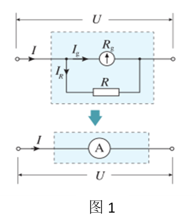
核心公式
① 分流电阻 $R=\dfrac{U_g}{I-I_g}=\dfrac{R_gI_g}{I-I_g}=\dfrac{R_g}{n-1}$
② 改装后内阻 $R_A=\dfrac{U_g}{I}=\dfrac{R_g}{n}$
③ 示数与表头读数关系 $I=nI_g$
例：0.6 mA 表头 → 0~3 A 电流表
$n=\dfrac{3000}{0.6}=5000$。表头示数 $0.2\ \text{mA}$ 对应改装表 $1\ \text{A}$，见下表与图：
同一表头改装成不同量程电流表的对比
量程 $0.6\ \text{A}$、$3\ \text{A}$，内阻比 $\dfrac{R_{A1}}{R_{A2}}=\dfrac{n_2}{n_1}=\dfrac{5}{1}$。串联时示数相等、偏角不同（内阻小者偏角大）；并联时两表头并联，偏角相等、示数之比等于分度值之比。
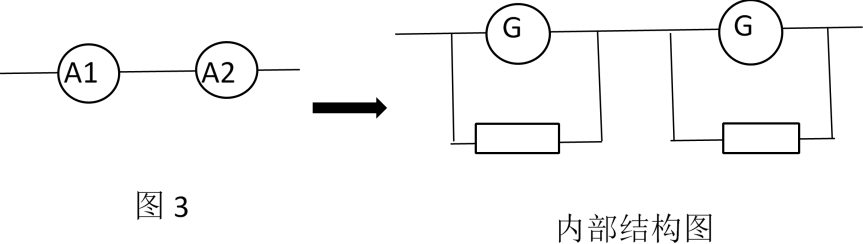
校准与误差
改装表与标准表串联校准，若读数总偏小 → 流过表头电流偏小 → 分流电阻偏小，应换稍大电阻或串小电阻。校准电路见图：
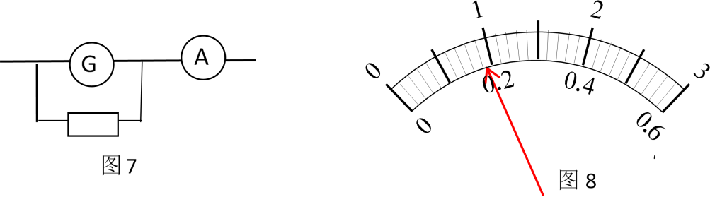
双量程电流表设计
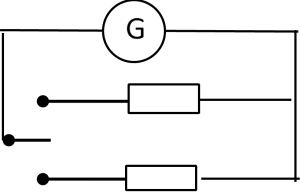
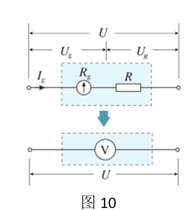
三、电压表的改装与校准
大量程电压表需在表头串联分压电阻，放大倍数 $n=\dfrac{U}{U_g}$。
核心公式
① 分压电阻 $R=(n-1)R_g$
② 改装后内阻 $R_V=R_g+R=(n-1)R_g+R_g=nR_g$
③ 读数关系 $U=I_gR_V$（表头电流放大 $R_V$ 倍）
例：R_g=10 Ω、I_g=0.6 mA → 0~3 V 电压表
$U_g=I_gR_g=6\ \text{mV}$，$n=\dfrac{3}{0.006}=500$，$R=(500-1)\times10=4990\ \Omega$，$R_V=5000\ \Omega$。表头 $0.2\ \text{mA}$ 对应 $1\ \text{V}$。
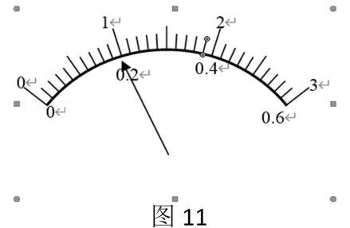
同一表头改装成不同量程电压表的对比
量程 $3\ \text{V}$、$15\ \text{V}$，内阻比 $\dfrac{R_{V1}}{R_{V2}}=\dfrac{1}{5}$。串联时表头电流相等、偏角相等、示数不等（$U_1:U_2=1:5$）；并联时电压相等、示数相等、偏角之比等于内阻反比（$5:1$）。
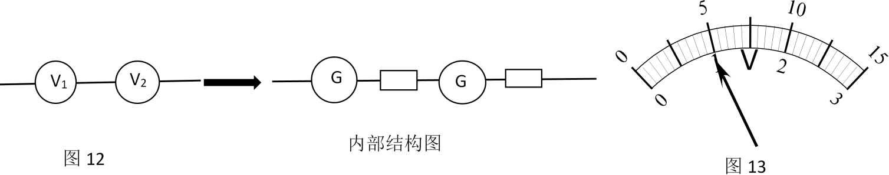
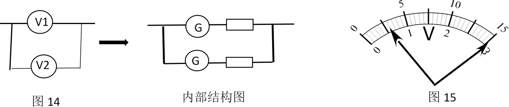
校准与误差
改装表与标准表串联校准，若读数总偏小 → 表头电流偏小 → 分压电阻偏大，应换稍小电阻或并大电阻。
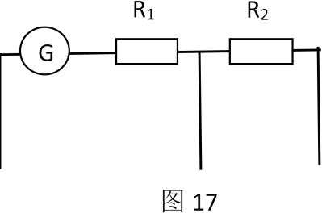
四、例题精析（点击看解析）
例 1
表头内阻 $R_G=27\ \Omega$、满偏电流 $I_G=3\ \text{mA}$，表盘如图甲。(1) 与 $R=973\ \Omega$ 串联改装成电压表，刻度如何改（标在乙图）；(2) 与 $R=3\ \Omega$ 并联改装成电流表，刻度如何改（标在丙图）。
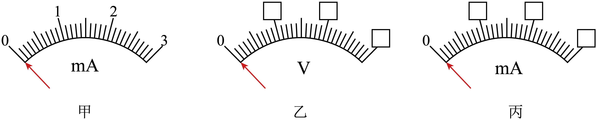
💡 答案与解析
【答案】量程 3 V / 30 mA；刻度重标见图
(1) 串联：$U=I_G(R+R_G)=3\ \text{V}$，满偏对应 $3\ \text{V}$，按线性重标电压刻度（乙图）。
(2) 并联：$I=I_G+\dfrac{I_GR_G}{R}=30\ \text{mA}$，满偏对应 $30\ \text{mA}$，按线性重标电流刻度（丙图）。
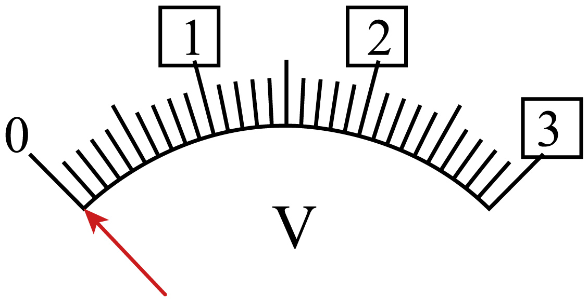
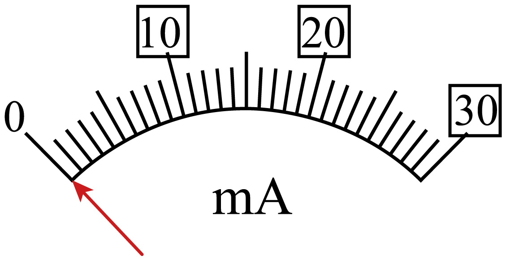
例 2
满偏 $100\ \text{mA}$、内阻 $40\ \Omega$ 的表头改装成测电流电压两用电表，$R_1=10\ \Omega$、$R_2=92\ \Omega$。下列说法正确的是（ ）
A. 接 Oa 是电流表，量程 $0\sim600\ \text{mA}$ B. 接 Ob 是电压表，量程 $0\sim50\ \text{V}$ C. 接 Oa 是电流表，量程 $0\sim500\ \text{mA}$ D. 接 Ob 是电压表，量程 $0\sim5\ \text{V}$
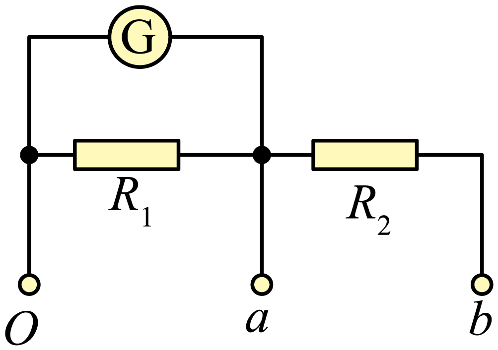
💡 答案与解析
【答案】BC 【难度】0.85
接 Oa：$R_1$ 分流 → 电流表，量程 $I=I_g+\dfrac{I_gR_g}{R_1}=500\ \text{mA}$，C 对 A 错。
接 Ob：$R_2$ 分压 → 电压表，量程 $U=I_gR_g+IR_2=50\ \text{V}$，B 对 D 错。
例 3
两相同小量程表改装成量程不同的大量程电流表 A₁、A₂，分别并联或串联接入电路（如图）。正确的是（ ）
A. 图甲示数相同 B. 图甲偏角相同 C. 图乙示数和偏角都相同 D. 图乙偏角不同、示数相同
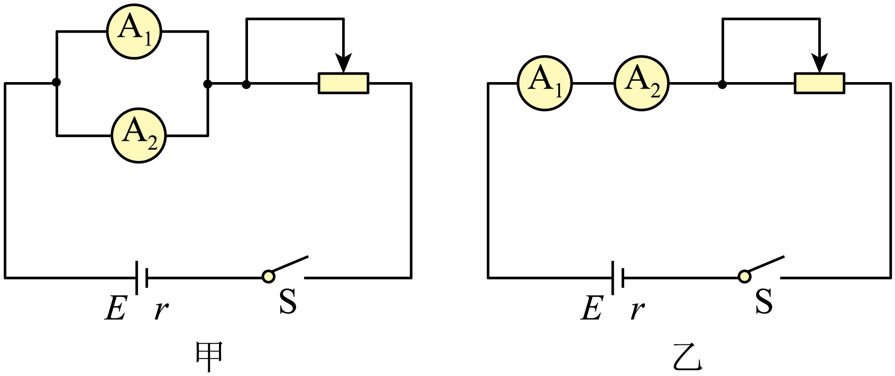
💡 答案与解析
【答案】BD 【难度】0.65
图甲并联：表头电压相等、电流相等 → 偏角相同；量程不同 → 读数不同，B 对 A 错。
图乙串联：示数相同；内阻不同 → 电压不同 → 表头电流不同 → 偏角不同，D 对 C 错。
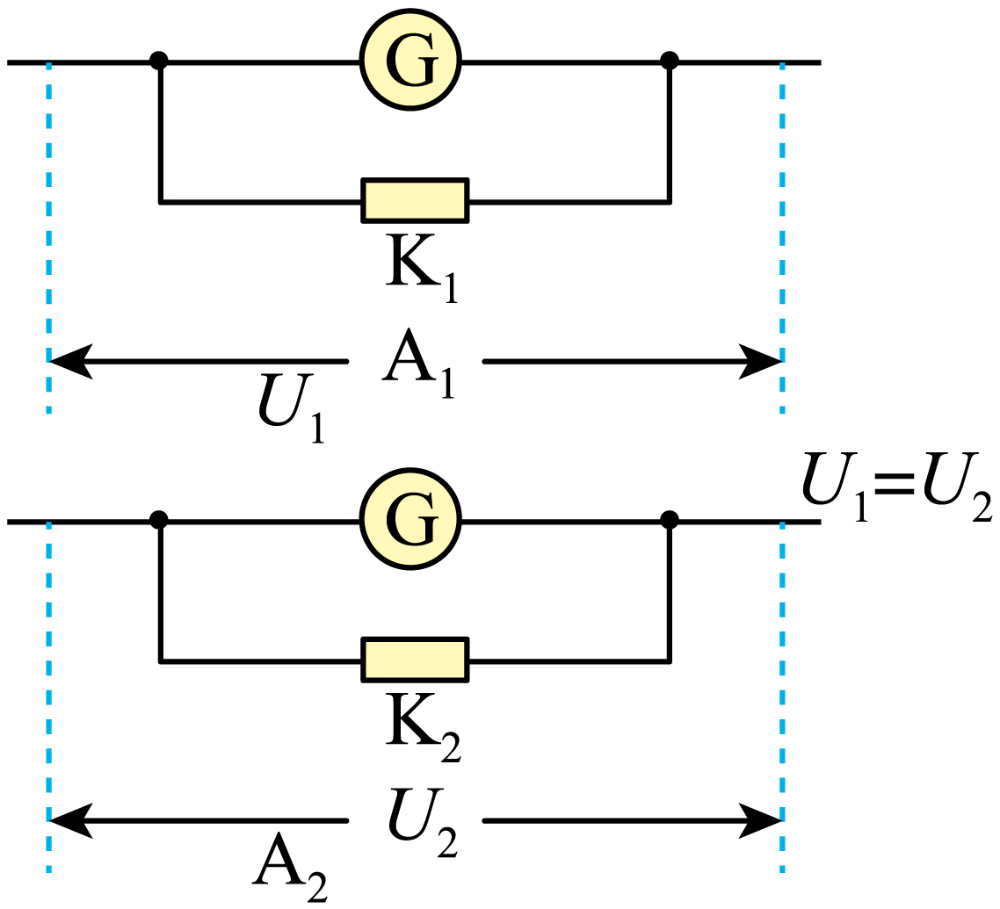
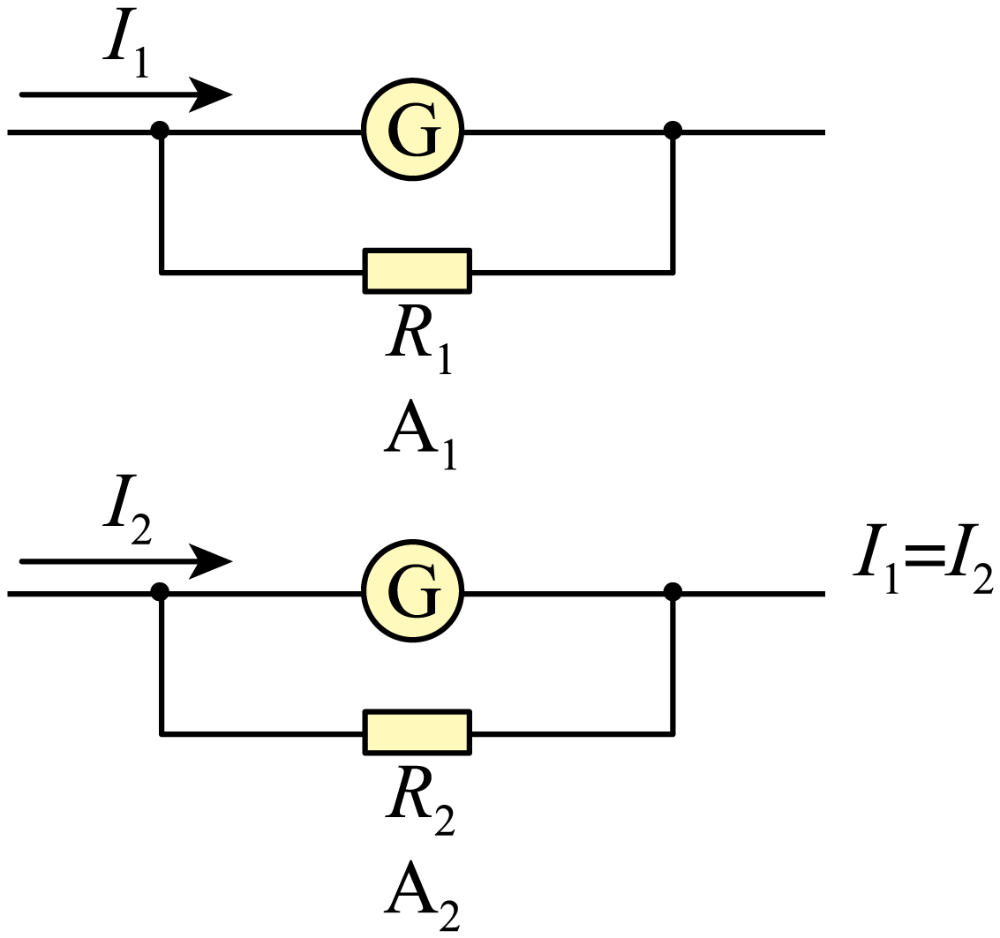
例 4
改装电流表接入电路校准，读数比标准表偏小。若两表表头 G 相同，可能原因是（ ）
① 待测表指针偏角偏小 ② 标准表指针偏角偏大 ③ 并联电阻 $R_$并$ $偏小 ④ $R_$并$ $偏大
A. ①③ B. ②④ C. ①④ D. ②③
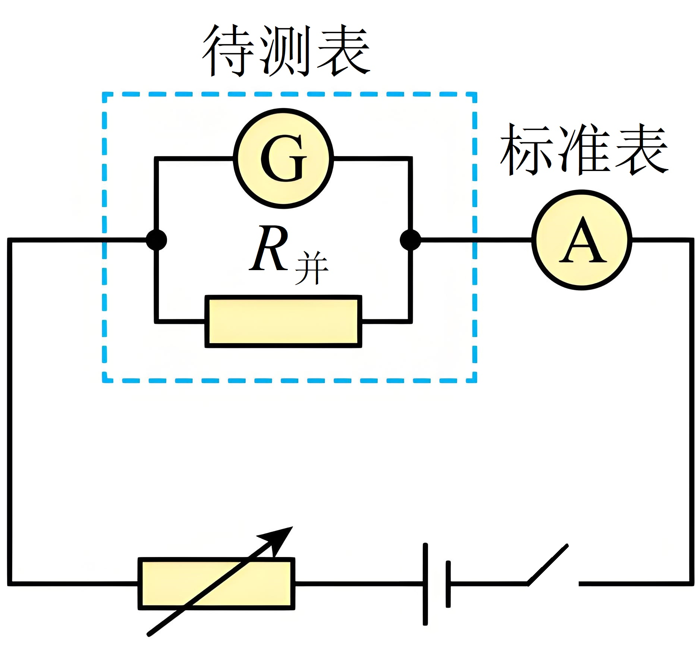
💡 答案与解析
【答案】A 【难度】0.85
待测表读数偏小 → 表头电流偏小 → 偏角偏小；$R_$并$ $越小分流越多、表头电流越小。故①③，选 A。
变式 1
两只完全相同表头（内阻 $100\ \Omega$）改装，甲图满偏电流 $I_g=$ ______、b 处量程 $9\ \text{V}$；乙图 $R_1=$ ______、$R_2=$ ______。选项：A. $I_g=2\ \text{mA}$ B. b 量程 $9\ \text{V}$ C. $R_1=\frac{10}{9}\ \Omega,R_2=10\ \Omega$ D. $R_1=5\ \Omega,R_2=45\ \Omega$
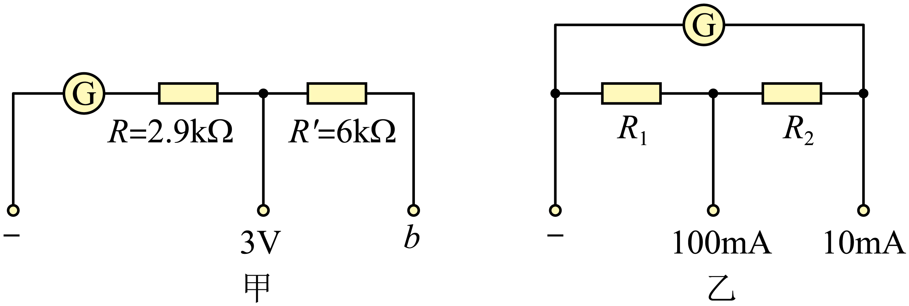
💡 答案与解析
【答案】BC 【难度】0.85
$I_g=\dfrac{3}{100+2900}=1\ \text{mA}$（A 错）；b 量程 $U=I_g(R_g+R+R')=9\ \text{V}$（B 对）。
改装 $10\ \text{mA}$：$R_1+R_2=\dfrac{I_gR_g}{0.009}=\dfrac{10}{9}\ \Omega$；改装 $100\ \text{mA}$：$R_1=\dfrac{I_g(R_g+R_2)}{0.1-0.001}$，联立 $R_1=\frac{10}{9}\ \Omega$、$R_2=10\ \Omega$（C 对）。
变式 2
关于电压表、电流表改装，正确的是（ ）
A. 并联电阻越小量程越大 B. 电压表示数偏小，给串联电阻并较大电阻 C. 电流表两端并小电阻，原表头最大电流将增大 D. 逐格校准需限流式电路
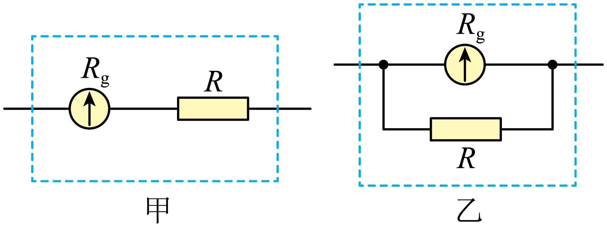
💡 答案与解析
【答案】AB 【难度】0.65
A：并联分流，电阻越小量程越大；B：示数偏小→减小串联电阻（并大电阻）；C：原表头最大电流仍为满偏电流，不变；D：逐格校准需分压式。故选 AB。
变式 3
微安表 $I_g=250\ \mu\text{A}$、$R_g=1200\ \Omega$ 改装为 $20\ \text{mA}$ 电流表。(1) $R=$ ______（表达式），约 ______ $\Omega$；(2) 标准表 $16.0\ \text{mA}$ 时微安表指针（图 b）示 $160\ \mu\text{A}$，实际量程为 ______（A.18 B.21 C.25 D.28）mA；(3) 原因可能是 ______（A.内阻实测偏大 B.内阻实测偏小 C.R 偏小 D.R 偏大）；(4) 换为 $kR$ 即可，$k=$ ______。
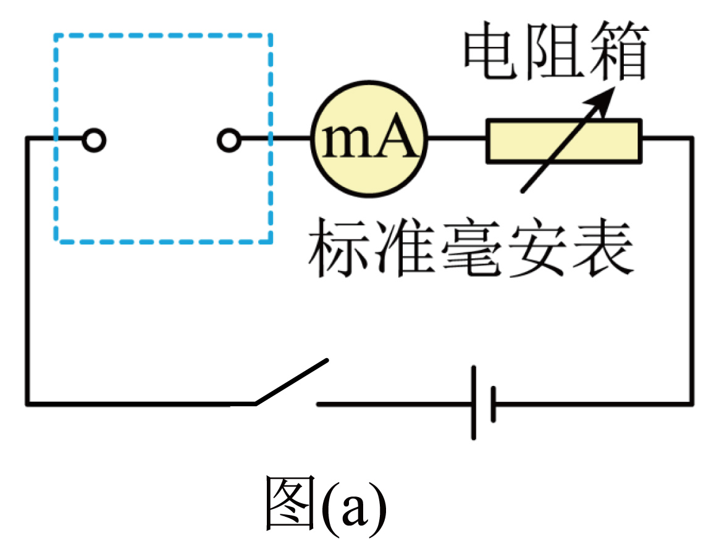
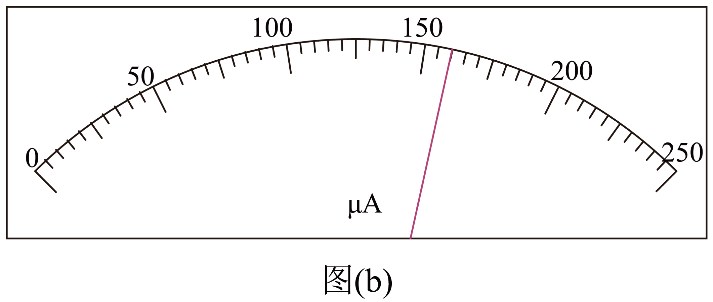
💡 答案与解析
【答案】(1) $\dfrac{I_gR_g}{I-I_g}$；$15$ (2) C (3) AC (4) $\dfrac{99}{79}$ 【难度】0.6
(1) 并联：$R=\dfrac{I_gR_g}{I-I_g}=15\ \Omega$。
(2) 比例 $n=\dfrac{16}{0.16}=100$，实际量程 $I=nI_g=25\ \text{mA}$，选 C。
(3) 实际量程偏大→内阻实测偏大或并联电阻偏小，选 AC。
(4) $k=\dfrac{R_{实}}{R_{预$期}}=\dfrac{I-I_g}{I_{实}-I_g}=\dfrac{20-0.25}{25-0.25}=\dfrac{99}{79}$$（取 mA 换算一致）。